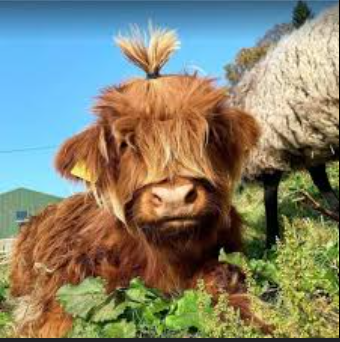
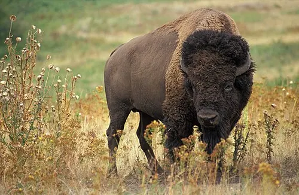
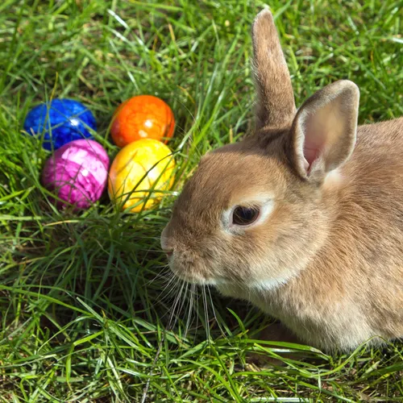

Estifanos Solomon Gebremedhin
GitHub: @estif34
Favorite Tech:Laravel
Fun Fact: I love Tennis!

I like giraffes because we can both reach high places.
GitHub: @clairemuthoni
Favorite Tech: Python
Fun Fact: I'm a recreational runner!
My favorite animal is a cow .
Cows are so cool, because they give us, milk, yoghurt, cheese and so many other cool things. In addition to the fact that they are so cute !!
GitHub: @estif34
Favorite Tech:Laravel
Fun Fact: I love Tennis!
I like giraffes because we can both reach high places.
GitHub: @nelsonmasbayi
Favorite Tech: Python & Web Development
Fun Fact: I enjoy solving complex problems and building innovative solutions!
I like bisons because they are basically nature's way of saying, “What if a tank had fur and a social anxiety disorder?”
GitHub: @Hadassah_J
Favorite Tech: JavaScript
Fun Fact: I love Dogs and bunnies.
I choose to use a picture of the bunny since its cute and fluffy.
Github: @AJAyiera
Favorite Tech: Python
Fun Fact: Time flies like an arrow, fruit flies like a banana

I like gorillas because they are strong, dependable and protective. I refuse to believe the propaganda that they lose to 100 men